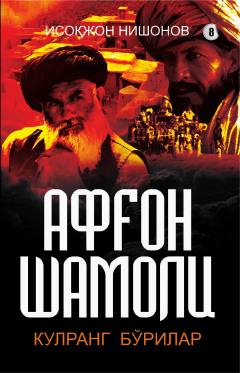

ASAfg'on shamoli romanining sakkizinchi qismi keskin voqealarga boy.
Mazkur asarda bosh қаҳрамон Бўроннинг Чеченистонга юборилиши, урушнинг аччиқ қисмати ҳамда мураккаб сиёсий воқеалар баён этилади. Шунингдек, қаҳрамонларнинг виждон азоби, Ватанга муҳаббат ва эзгулик йўlidagi kurashlari tasvirlangan.